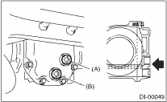

1. Disconnect the oil temperature switch connector. (Turbo model for Europe)

|
(A) |
Connector |
2. Remove the filler plug or the oil temperature switch, and then check the gear oil. If it is contaminated or deteriorated, replace the gear oil.
NOTE:
For turbo model for Europe, remove the oil temperature switch and the filler plug as a unit.
3. Check that the gear oil level is up to the bottom of filler plug or the oil temperature switch hole. If the level is low, refill up to the bottom of filler plug.

|
(A) |
Filler plug |
|
(B) |
Drain plug |
4. When check is completed, tighten the filler plug or the oil temperature switch.
NOTE:
• For turbo model for Europe, install the oil temperature switch and the filler plug as a unit.
• Apply liquid gasket to the drain plug for the T-type.
• For VA-type, use a new aluminum gasket.
Liquid gasket:
THREE BOND 1105 (Part No. 004403010) or equivalent
Tightening torque:
T-type
49 N·m (5.0 kgf-m, 36.2 ft-lb)
VA-type
34 N·m (3.5 kgf-m, 25.1 ft-lb)
5. Connect the connector to oil temperature switch. (Turbo model for Europe)